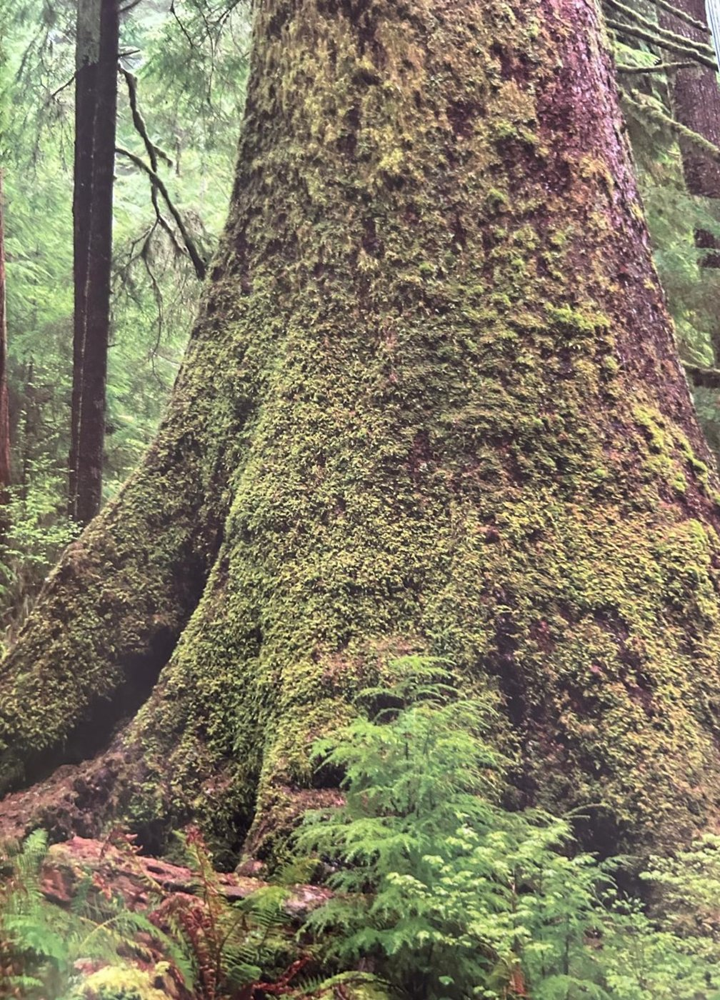

Groepen › Nieuwe Wereld
4. Washington, Olympicgebergte

Tegenover de agglomeratie van Seattle, over de brede baai van de Puget Sound, ligt het Olympisch gebergte. Hier in het noordwestelijke kustgebied van de Verenigde Staten zetten Sitkasparren naast Hemlock, Douglas en Thuja de toon. De Thuja of Reuzenlevensboom maakt, wanneer hij de plaats heeft, vanaf de stamvoet vaak uitlopers die even goed tot volwassen bomen kunnen uitgroeien. Langs de weideranden woekert de Rondbladesdoorn, een onder de esdoorns nogal uitzonderlijke struikvorm die meer verwantschap vertoont met de Japanse kleinere esdoornsoorten dan met de Amerikaanse of de Europese. De arboretumgroep is in de jaren 50 en later uitgebreid over de Kapucijnendreef heen. Bij de Barakkevijver wordt recent werk gemaakt van een verjongd rivieroeverbosje met Oregones, Rode els, Balsempopulier en een westelijke Amelanchiersoort.
Uit het boek
5,60 ha · 16 soorten · 2562 bomen
- Het Olympicgebergte en zijn regenschaduw: Blyn krijgt 630 mm per jaar, Forks aan de andere kant bijna 2940 mm.
- 4A grootbladige esdoorn met een vijftiental balsempopulieren, 4B douglas, 4C bijna alleen sitkaspar.
- 4D ligt apart, naast de vijver van de Barakkendelle ten zuiden van de Kapucijnendreef: de enige Nieuwe-Wereldgroep daar, met rode els, sitka-els en een vijftal Amelanchier alnifolia die in de lente wit bloeien.
- Mos, mist en jonge boompjes die op rottende stammen kiemen ("nurse logs").

Bron: Geografisch Arboretum Tervuren. Een wereldreis rond bomen (2020), p. 98 en volgende.
Deelgroepen
- 4A – Olympisch gebergte A
- 4B – Washington - Olympic Mountains B
- 4C – Washington - Olympic Mountains C
- 4D – Washington - Olympic Mountains D
Soorten in deze groep (16)
- Tsuga heterophyllaWest-Amerikaanse hemlockspar · 1371 bomen
- Pseudotsuga menziesiiGewone douglasspar · 590 bomen
- Picea sitchensisSitkaspar · 228 bomen
- Thuja plicataReuzenlevensboom · 222 bomen
- Acer macrophyllumGrootbladesdoorn · 40 bomen
- Populus trichocarpaWest-Amerikaanse balsempopulier · 31 bomen
- Pinus monticolaAmerikaanse witte den · 25 bomen
- Fraxinus latifoliaOregon-es · 17 bomen
- Alnus rubraRode els · 14 bomen
- Alnus speciesels · 10 bomen
- Amelanchier alnifolia5 bomen
- Abies amabilisCascadenzilverspar · 2 bomen
- Abies grandisReuzenzilverspar · 2 bomen
- Acer circinatumAmerikaanse rondbladesdoorn · 2 bomen
- Rhamnus purshiana2 bomen
- Alnus viridis subsp. sinuataSitka-els · 1 boom
Tekst en foto: arboretum-tervuren.be (Koninklijke Schenking), met toestemming gebruikt.